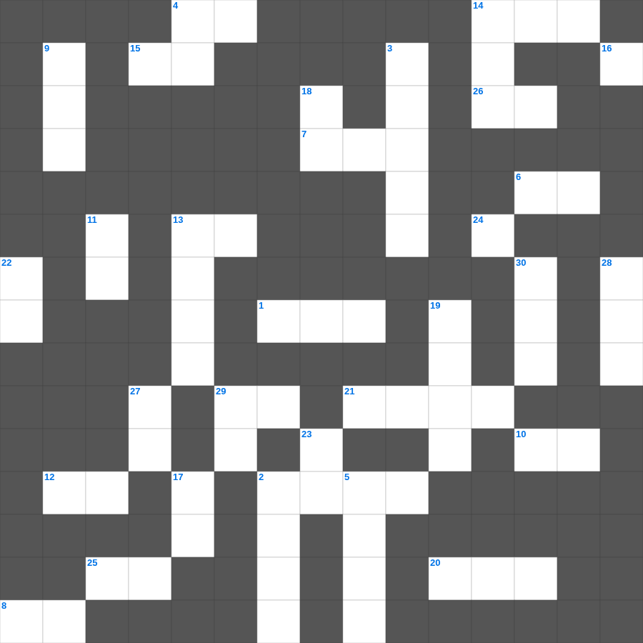

마가복음 심화 50
📌 서비스 정의
십자가로세로는 교회 주보와 주일학교에서 사용할 수 있는 성경 기반 가로세로 퍼즐 서비스입니다. 성경 인물, 사건, 핵심 구절을 바탕으로 제작되었습니다. 온라인 풀이 및 인쇄 기능을 제공합니다.
📖 마가복음란?
마가복음은 가장 짧고 속도감 있게 기록된 복음서로, 예수님을 고난받는 종이자 능력의 메시아로 강조하며 그분의 행동과 사역을 중심으로 전개됩니다.
📚 마가복음의 주요 사건·주제
예수님의 세례와 시험 · 여러 치유와 축귀 사역 · 변화산 사건 · 예루살렘 입성과 고난 · 십자가와 부활
마가복음의 말씀을 퀴즈로 배우는 마가복음 주일학교 퀴즈입니다. 가로 힌트와 세로 힌트를 보고 35개의 단어를 맞춰보세요. 인쇄도 가능하고 정답 확인도 바로 되니 소그룹 모임이나 가정 예배 시간에도 활용하실 수 있습니다.

📝 가로 힌트
1. 모든 사람과 더불어 화평함과 이것을 따르라 이것이 없이는 아무도 주를 보지 못하리라
2. 골로새 교회에 복음을 전하고 바울에게 그들의 사랑을 알린 신실한 일꾼
4. 베드로후서 3장 11절: 모든 것이 이렇게 풀어지리니 너희가 어떠한 사람이 되어야 이것하냐
6. 너희 마음을 위로하시고 모든 선한 일과 말에 이것하게 하시기를 원하노라
7. 다윗의 용사들 중 세 명의 우두머리
8. 누가복음 17장에서 문둥병자 몇 명이 고침을 받았나
10. 입으로는 하나님을 시인하나 무엇으로는 부인하는 자들인가
12. 하나님이 기름 부으라고 하신 이새의 여덟째 아들
13. 그 입으로 자랑하는 말을 하며 이익을 위하여 이것을 하느니라
14. 너희 중에 심지어 음행이 있다 함을 들으니 그런 음행은 이것들 중에서도 없는 것이라
15. 이것이 약한 자들을 격려하고 힘이 없는 자들을 붙들어 주며
20. 바울이 3차 선교 여행 중 고린도에서 쓴 편지
21. 요한일서 4장 7절: 사랑하는 자들아 우리가 서로 무엇하자
24. 세상에 외치는 자의 소리여 이르되 너희는 광야에서 여호와의 이것을 예비하라
25. 아무도 비방하지 말며 다투지 말며 관용하며 범사에 온유함을 모든 사람에게 나타낼 것을 이것하게 하라
26. 누가 이 편지에 한 우리 말을 순종하지 아니하거든 그 사람을 이것하여 사귀지 말고 그로 하여금 부끄럽게 하라
29. 하나님의 영광이 가득하여 제사장들이 능히 서지 못한 곳
📝 세로 힌트
2. 그리스도 예수 안에서 나와 함께 갇힌 자 이것이 네게 문안하고
3. 백성들이 율법을 깨닫도록 도와준 사람들
4. 내 법을 그들의 생각에 두고 그들의 이것에 이것을 기록하리라
5. 아브라함이 아비멜렉과 언약을 맺은 우물
9. 하나님은 이스라엘의 이것이 되시려고 애굽에서 인도하심
11. 무릇 마음이 가난하고 심령에 이것하며 내 말을 듣고 떠는 자 그 사람은 내가 돌보려니와
13. 다섯째 나팔: 무저갱의 사자, 히브리어로는 아바돈, 헬라어로는 이것
14. 그의 안식에 들어갈 약속이 남아 있을지라도 너희 중에는 혹 이것하지 못할 자가 있을까 함이라
16. 골리앗의 칼이 보관되어 있던 곳
17. 이기기를 다투는 자마다 모든 일에 이것하나니
18. 레위기는 누구에게 주신 말씀인가
19. 사무엘을 키운 엘리 제사장의 다른 아들
22. 나 바울은 이것으로 문안하노니 이는 편지마다 표시로서 이렇게 쓰노라
23. 반역을 일으켰던 '비그리의 아들' 이름
27. 종들은 자기 상전들에게 범사에 이것하여 기쁘게 하고 거슬러 말하지 말며
28. 요셉의 꿈에서 절을 했던 열한 개의 이것
29. 솔로몬이 7년에 걸쳐 완공한 것
30. 빌레몬서의 전체 절 수
📖 함께 읽으면 좋은 성경사전
퍼즐을 풀기 전에 읽으면 힌트가 쉬워지고, 풀고 나서 읽으면 내용을 한 번 더 복습할 수 있습니다.
🧩 이 퍼즐에서 배우는 내용
이 퍼즐은 마가복음 심화 50의 핵심 단어와 개념을 자연스럽게 복습할 수 있도록 구성되었습니다. 주일학교 수업이나 개인 성경공부에서 학습 내용을 점검하는 용도로 바로 활용할 수 있습니다.
🧑🏫 교회 교육 자료 활용
이 퍼즐은 주일학교 교재 추천 자료로 활용할 수 있고, 주일학교 주보에 넣기 좋은 분량으로 구성되어 있습니다. 수업용 주일학교 교안에 활동지로 붙이거나, 예배 후 복습용 주일학교 공과교재로 바로 사용할 수 있습니다.
🏷️ 키워드
마가복음 주일학교 퀴즈, 마가복음, 십자가로세로, 성경퀴즈, 말씀퀴즈, 가로세로퍼즐, 주일학교 교재 추천, 주일학교 주보, 주일학교 교안, 주일학교 공과교재